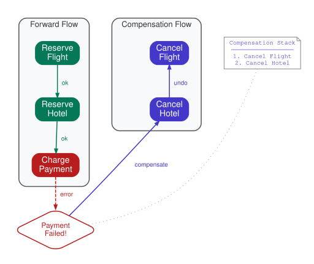

The Saga (Compensating Interaction)
Orchestrate a sequence of distributed actions with paired compensations, maintained on a stack, that unwind in reverse order upon failure.
Intent. A business transaction spans multiple services. Each step has a compensating action that undoes it. If any step fails, previously completed steps must be compensated in reverse order. The Saga maintains a compensation stack inside a workflow, ensuring reliable rollback without distributed transactions.
Motivation. A customer books a trip: reserve a flight, reserve a hotel, charge payment. Three different services, three different APIs, no shared database, no two-phase commit. If the payment charge fails after the flight and hotel are reserved, both reservations must be cancelled. If the hotel cancellation itself fails (e.g., the hotel API is down), the cancellation must be retried until it succeeds. The customer can’t end up with a hotel reservation they were never charged for, or a flight reservation that nobody knows about.
This is the classic distributed transaction problem, and the Saga pattern — originally described by Garcia-Molina and Salem in 1987 [1] — is the standard solution for systems that can’t use two-phase commit. The insight is that each forward action has a compensating action (reserve flight / cancel flight), and these compensations must execute in reverse order on failure. Reverse order matters because later steps may depend on earlier ones still being in place. For example, if you cancel the flight before cancelling the hotel, the hotel system might still hold a reservation linked to a now-cancelled flight — creating an orphaned booking that no downstream process knows how to clean up. Unwinding from the most recent step backward ensures each compensation operates against a consistent state.
The Pattern

The Saga workflow executes a sequence of forward actions — the steps that advance the transaction (reserve flight, reserve hotel, charge payment). Each is a durable step (an activity in Temporal) with a timeout and retry policy. After each successful action, the workflow pushes the corresponding compensating action onto a compensation stack — a LIFO structure that ensures reverse-order execution on failure. Compensations are the inverse operations (cancel flight, cancel hotel, refund payment). As with each step in the forward flow, each compensation must be idempotent, because the runtime may retry it if the worker crashes before its execution is complete.
Traditionally, the two common approaches are choreography and custom
orchestration, and both have significant drawbacks. In choreography, each
service listens for events and emits events through a message broker (Apache Kafka,
RabbitMQ), scattering the saga’s logic across services — there’s no single
place showing the booking’s current state, and adding a new step means updating
event handlers in multiple services. A custom orchestrator centralizes
coordination but requires its own persistence: a sagas table with serialized
compensation parameters, a state machine tracking which steps completed, crash
recovery logic that scans for abandoned sagas, and idempotent compensations
tracked in a database. The orchestrator needs its own retry policies, dead
letter handling, and monitoring. You’ve essentially built a workflow engine.
With Durable Execution. The saga becomes a single workflow with a try/catch and a stack:
[Workflow]
public class TravelBookingWorkflow
{
private static readonly ActivityOptions ForwardOptions = new()
{
StartToCloseTimeout = TimeSpan.FromSeconds(30),
};
private static readonly ActivityOptions CompensationOptions = new()
{
StartToCloseTimeout = TimeSpan.FromSeconds(30),
RetryPolicy = new RetryPolicy
{
MaximumAttempts = 10,
InitialInterval = TimeSpan.FromSeconds(1),
BackoffCoefficient = 2.0,
},
};
[WorkflowRun]
public async Task<string> RunAsync(BookingRequest request)
{
var compensations = new Stack<Func<Task>>();
try
{
// Step 1: Reserve flight
var flightRef = await Workflow.ExecuteActivityAsync(
(TravelActivities a) => a.ReserveFlightAsync(request.FlightId),
ForwardOptions);
compensations.Push(() => Workflow.ExecuteActivityAsync(
(TravelActivities a) => a.CancelFlightAsync(flightRef),
CompensationOptions));
// Step 2: Reserve hotel
var hotelRef = await Workflow.ExecuteActivityAsync(
(TravelActivities a) => a.ReserveHotelAsync(request.HotelId),
ForwardOptions);
compensations.Push(() => Workflow.ExecuteActivityAsync(
(TravelActivities a) => a.CancelHotelAsync(hotelRef),
CompensationOptions));
// Step 3: Charge payment
var paymentRef = await Workflow.ExecuteActivityAsync(
(TravelActivities a) => a.ChargePaymentAsync(request.PaymentInfo, request.TotalAmount),
new() { StartToCloseTimeout = TimeSpan.FromSeconds(60) });
compensations.Push(() => Workflow.ExecuteActivityAsync(
(TravelActivities a) => a.RefundPaymentAsync(paymentRef),
CompensationOptions));
return $"Booked: flight={flightRef}, hotel={hotelRef}, payment={paymentRef}";
}
catch (Exception ex)
{
// Compensate in reverse order
while (compensations.Count > 0)
{
var compensation = compensations.Pop();
await compensation();
}
return $"Booking failed and compensated: {ex.Message}";
}
}
}The structure is straightforward. The compensations stack is a local variable.
Each successful forward action pushes its inverse onto the stack as a lambda.
If any step throws, the catch block pops compensations and executes them in
reverse order.
This is ordinary C# code — a Stack<Func<Task>>, a try/catch, and a while
loop. What makes it a saga is the runtime guarantees underneath. If the worker
crashes after reserving the flight but before reserving the hotel, the runtime
replays the workflow: it re-executes the code, returns the cached result of
ReserveFlightAsync (the flight isn’t re-reserved), and continues from the
hotel step. If the worker crashes during compensation — between cancelling the
hotel and refunding the payment — the runtime replays through the successful
forward actions, enters the catch block, skips the compensations that already
completed (their results are in the history), and continues with the refund.
The compensation stack is reconstructed on replay because it’s built by the deterministic code path. The runtime doesn’t need to persist the stack separately — it’s an emergent property of replaying the code. This is the same mechanism that makes all durable execution patterns work, but it’s particularly elegant here because the compensation logic, which would require its own persistence layer in a traditional implementation, gets it for free.
Consequences. The Saga pattern co-locates forward and compensation logic in a single function. A new developer can read the booking saga top to bottom and understand what happens on success and on failure without consulting a state machine, a database schema, or event contracts across three services.
Compensations must be idempotent. If the runtime retries
CancelFlightAsync because the worker crashed after the cancellation API call
returned but before the result was persisted, the flight service must handle the
duplicate cancellation request gracefully — returning success without cancelling
again. This isn’t unique to the Saga pattern; it’s a universal requirement for
compensating actions. But it’s worth emphasizing because the durable execution
runtime makes retries invisible, which can create a false sense of safety if
your compensations aren’t idempotent. Compensations should also use
aggressive retry policies — a compensation that fails permanently leaves the
system in a partially rolled-back state, which is worse than no rollback at all.
The code example uses CompensationOptions with MaximumAttempts = 10 and
exponential backoff precisely for this reason: compensations must keep trying
until they succeed.
Some actions are not compensable. You can’t unsend a notification email. You can’t un-charge a card that has already settled (you can refund it, but that’s a new transaction, not an undo). The Saga pattern works best when every forward action has a clean inverse. For actions that aren’t reversible, consider reordering the saga to execute non-compensable actions last, after all fallible steps have succeeded. In the original saga literature, the first non-compensable step is called the pivot transaction — the point of no return after which the saga must go forward, not back.
Distinction from Code-as-State. Code-as-State (Chapter 2) represents a process that moves through a sequence of steps — the state is implicit in the execution position. The Saga extends this with explicit compensation tracking. If your process doesn’t need to undo previous steps on failure — if a failure simply means "stop and report the error" — you want Code-as-State, not a Saga.
Known Applications
-
Travel booking — reserve flight, hotel, car; compensate on failure.
-
Order management — reserve inventory, charge payment, schedule shipment.
-
Account provisioning — create user, assign roles, provision resources.
-
Financial transactions — debit account A, credit account B; reverse on failure.
Related Patterns